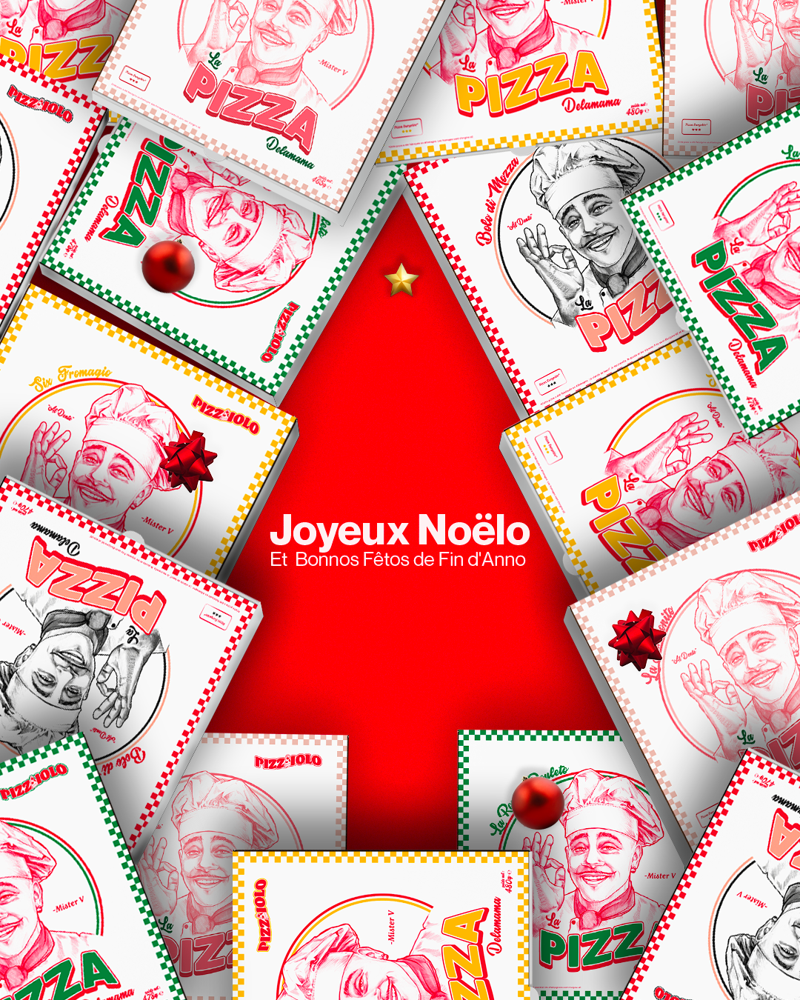
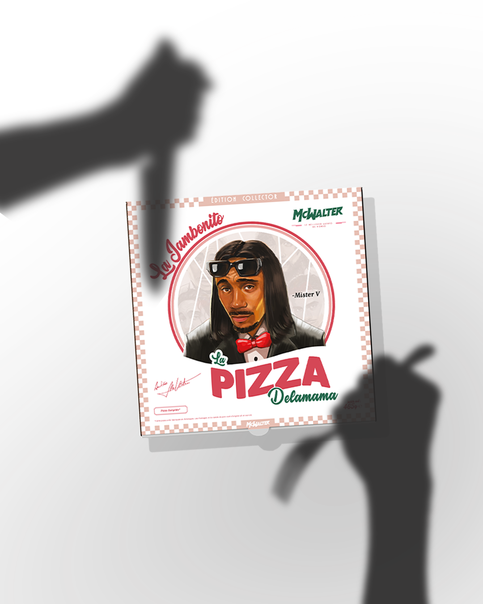
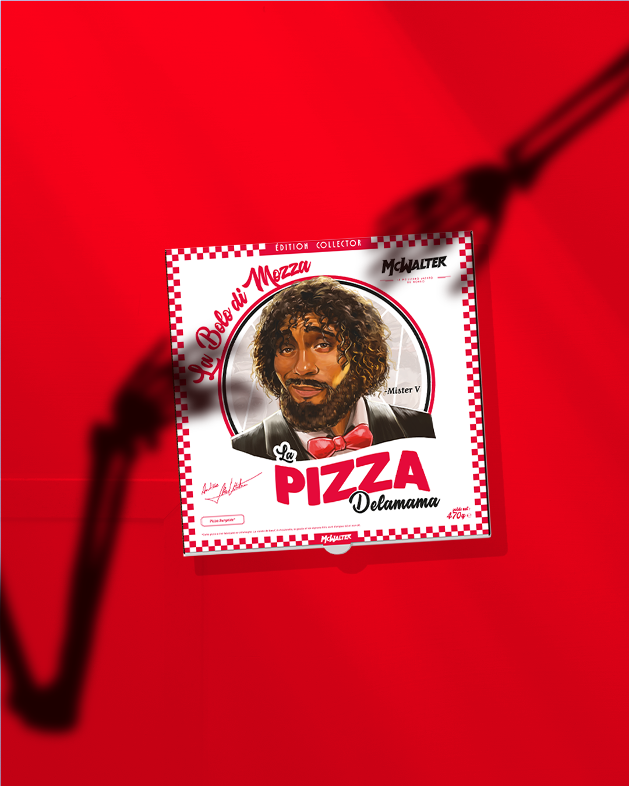
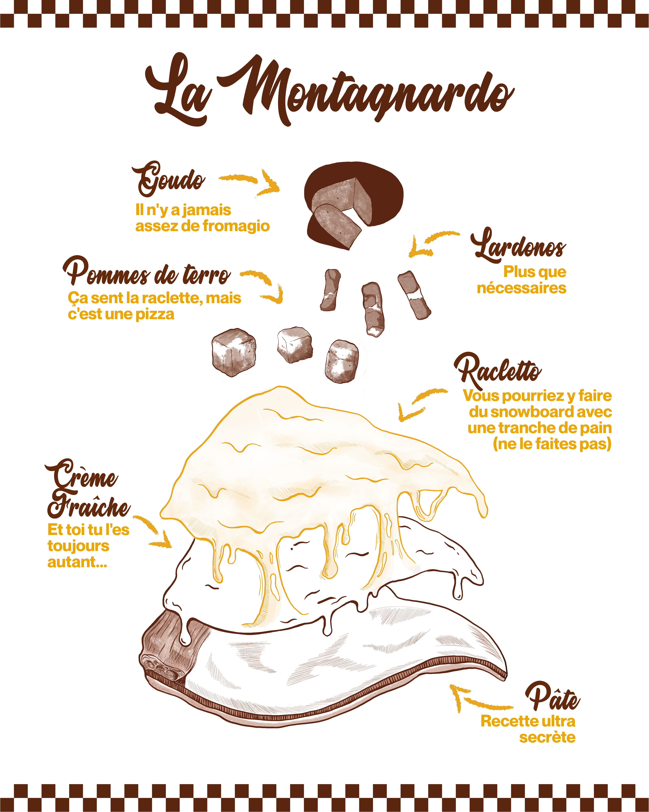
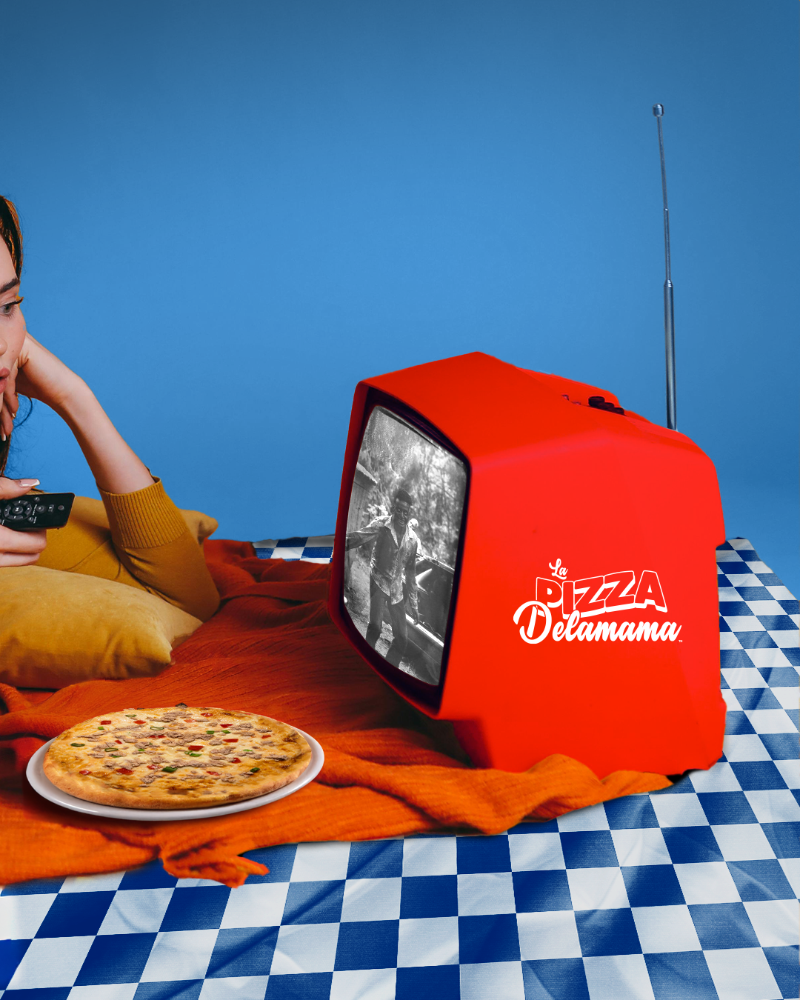
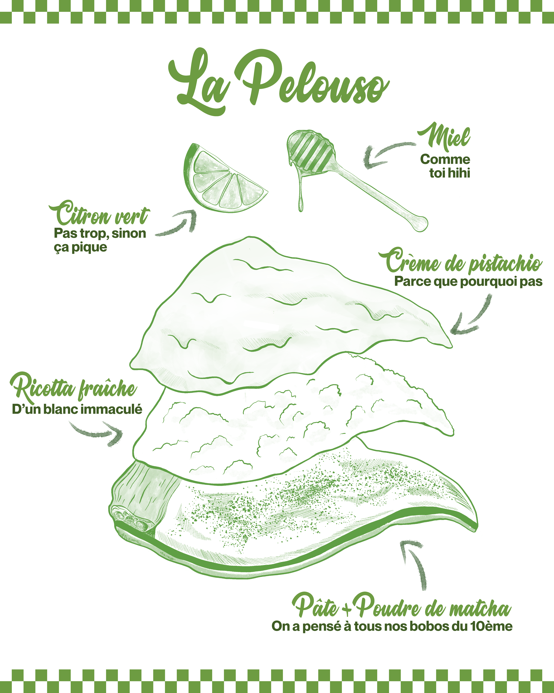
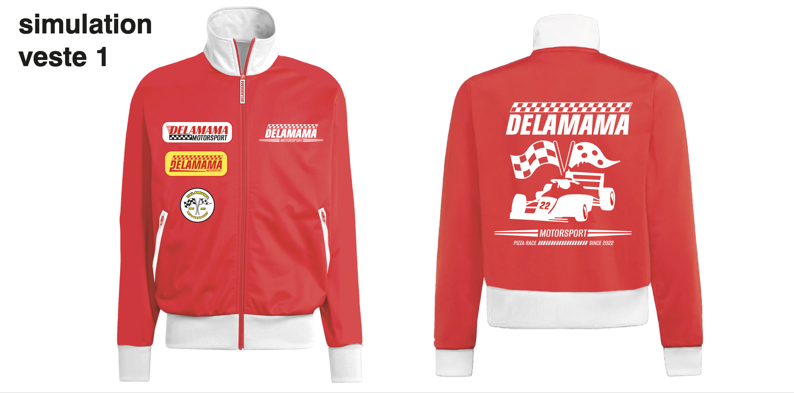
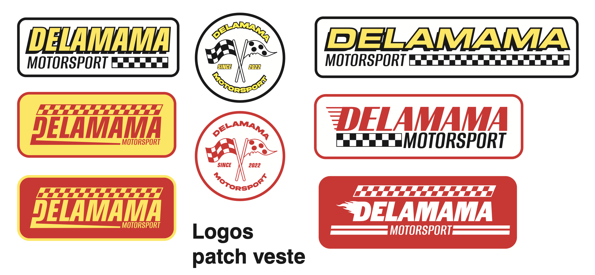

Pizza Delamama
Identité Visuelle, Illustration, Montage vidéo, Motion Design, Retouches photo
Client : A&R studios, Universal Music France
Lieu : Paris
Initiée lors de mon stage au sein du studio créatif d’Universal Music A&R studios, ma collaboration avec Pizza Delamama s'est poursuivie sur le long terme. L'enjeu est de nourrir l'identité décalée et humoristique de la marque à travers des contenus hebdomadaires réactifs aux tendances des réseaux sociaux.
En étroite collaboration avec l'équipe créative, j'assure l'exécution de supports variés : illustrations, montages photo et vidéo, retouches et motion design. Mon rôle est de traduire des briefs conceptuels en visuels percutants, tout en conservant l'ADN disruptif de la marque.
L’enjeu principal de ce projet était de respecter l'identité forte de Mister V et son public "core", tout en proposant une esthétique capable de séduire une audience plus large. Cette exigence impose une précision dans les choix graphiques pour rester authentique sans être exclusif.
Cette mission m’a permis de confronter mes intentions créatives aux réalités stratégiques d'une marque. Certains essais n'ont pas été retenus car ils s'écartaient de ce positionnement spécifique. Ces itérations ont été essentielles pour affiner la réponse visuelle finale et m'ont permis de mieux appréhender les compromis nécessaires entre audace créative et objectifs marketing.







